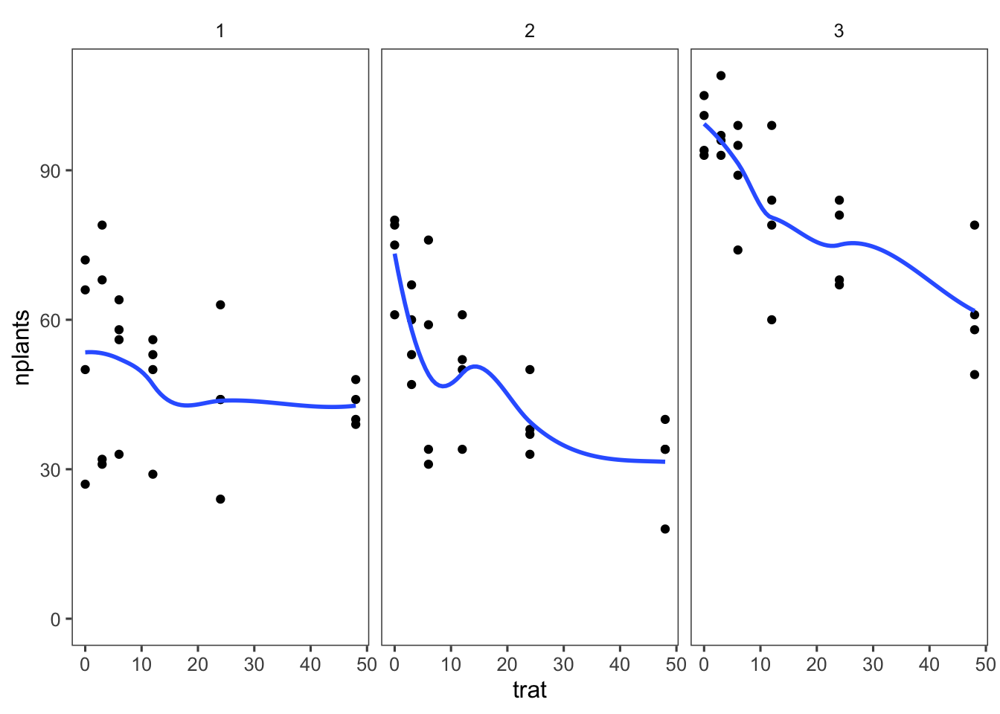
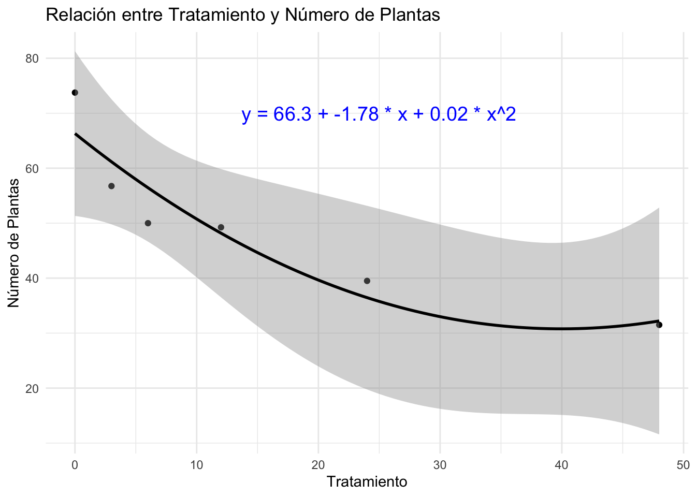
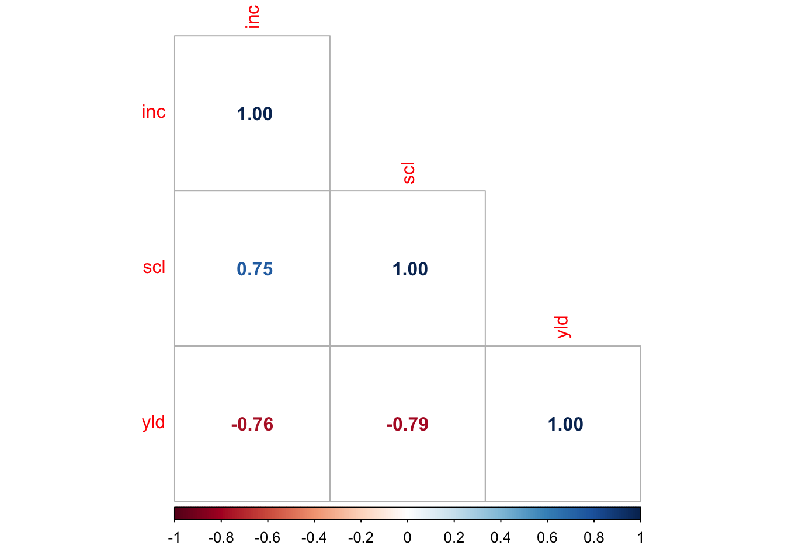

Codigo
# Cargar paquetes necesarios
library(tidyverse)
library(readxl)
library(ggplot2)
library(ggthemes)
library(corrplot)La análisis de correlación se utiliza para evaluar la fuerza y la dirección de la relación entre dos variables continuas. Mide el grado de asociación lineal entre las variables. La medida más común de correlación es el coeficiente de correlación de Pearson.
Primero, cargamos los paquetes necesarios y los datos. Utilizaremos los paquetes tidyverse, readxl y ggplot2 para la manipulación y visualización de datos.
Importamos los datos desde un archivo Excel. En este ejemplo, trabajamos con un conjunto de datos llamado estande.
Visualizamos los datos para obtener una idea preliminar de la relación entre las variables.

Utilizamos la función lm() para ajustar un modelo lineal simple. La fórmula del modelo especifica la relación entre la variable dependiente (y) y la variable independiente (x).
Call:
lm(formula = mean_nplants ~ trat, data = estande2)
Residuals:
1 2 3 4 5 6
12.764 -2.134 -6.782 -3.327 -4.669 4.147
Coefficients:
Estimate Std. Error t value Pr(>|t|)
(Intercept) 60.9857 4.5505 13.402 0.000179 ***
trat -0.7007 0.2012 -3.483 0.025294 *
---
Signif. codes: 0 '***' 0.001 '**' 0.01 '*' 0.05 '.' 0.1 ' ' 1
Residual standard error: 8.117 on 4 degrees of freedom
Multiple R-squared: 0.752, Adjusted R-squared: 0.69
F-statistic: 12.13 on 1 and 4 DF, p-value: 0.02529Para ajustar un modelo cuadrático, incluimos la variable independiente al cuadrado en la fórmula del modelo.
Call:
lm(formula = mean_nplants ~ trat + trat2, data = estande2)
Residuals:
1 2 3 4 5 6
7.4484 -4.4200 -6.4386 1.0739 3.0474 -0.7111
Coefficients:
Estimate Std. Error t value Pr(>|t|)
(Intercept) 66.30156 4.70800 14.083 0.000776 ***
trat -1.77720 0.62263 -2.854 0.064878 .
trat2 0.02223 0.01242 1.790 0.171344
---
Signif. codes: 0 '***' 0.001 '**' 0.01 '*' 0.05 '.' 0.1 ' ' 1
Residual standard error: 6.517 on 3 degrees of freedom
Multiple R-squared: 0.8801, Adjusted R-squared: 0.8001
F-statistic: 11.01 on 2 and 3 DF, p-value: 0.04152Utilizamos el criterio de información de Akaike (AIC) para comparar los modelos ajustados.
Visualizamos el modelo ajustado y añadimos la ecuación de la regresión en el gráfico.
# Extraer coeficientes del modelo cuadrático
intercepto <- coef(modelo_cuadratico)[1]
pendiente1 <- coef(modelo_cuadratico)[2]
pendiente2 <- coef(modelo_cuadratico)[3]
# Crear la ecuación en formato de texto
ecuacion <- paste("y =", round(intercepto, 2), "+", round(pendiente1, 2), "* x +", round(pendiente2, 2), "* x^2")
# Crear el gráfico con la ecuación del modelo cuadrático
ggplot(estande2, aes(x = trat, y = mean_nplants)) +
geom_point() +
geom_smooth(formula = y ~ poly(x, 2), method = "lm", color = "black") +
annotate("text", x = 25, y = 70, label = ecuacion, color = "blue", size = 5) +
labs(title = "Relación entre Tratamiento y Número de Plantas", x = "Tratamiento", y = "Número de Plantas") +
theme_minimal()
Cuando se tiene dos variables respuesta numéricas continuas, se estudia la relación entre ellas utilizando el coeficiente de correlación de Pearson.
Visualizamos la relación entre las variables inc y yld del conjunto de datos mofo.
Utilizamos la función cor.test() para calcular el coeficiente de correlación de Pearson y realizar un test de hipótesis.
Pearson's product-moment correlation
data: mofo1$inc and mofo1$yld
t = -6.8451, df = 11, p-value = 2.782e-05
alternative hypothesis: true correlation is not equal to 0
95 percent confidence interval:
-0.9699609 -0.6921361
sample estimates:
cor
-0.8999278 Una matriz de correlación muestra las correlaciones entre pares de variables.
study treat inc scl yld
study 1 NA NA NA NA
treat NA 1.0000000 -0.6830371 -0.6518545 0.7887185
inc NA -0.6830371 1.0000000 0.9128688 -0.8999278
scl NA -0.6518545 0.9128688 1.0000000 -0.9222418
yld NA 0.7887185 -0.8999278 -0.9222418 1.0000000Utilizamos el paquete corrplot para generar gráficos de correlación.
El coeficiente de correlación de Kendall es una medida no paramétrica de correlación. Es más robusto para datos no lineales o cuando la relación entre las variables no sigue una distribución normal.
Shapiro-Wilk normality test
data: mofo1$inc
W = 0.92076, p-value = 0.2568
Shapiro-Wilk normality test
data: mofo1$yld
W = 0.94388, p-value = 0.5091
Kendall's rank correlation tau
data: mofo1$inc and mofo1$yld
z = -3.6062, p-value = 0.0003107
alternative hypothesis: true tau is not equal to 0
sample estimates:
tau
-0.7613062 
Esta guía proporciona una introducción completa al análisis de correlación y ajuste de modelos lineales en RStudio. Cada paso incluye la explicación de los paquetes y funciones utilizados, lo que facilita su comprensión y aplicación para principiantes.
# Análisis de Correlación
La **análisis de correlación** se utiliza para evaluar la fuerza y la dirección de la relación entre dos variables continuas. Mide el grado de asociación lineal entre las variables. La medida más común de correlación es el **coeficiente de correlación de Pearson**.
## Preparo pre-análisis y visualización
Primero, cargamos los paquetes necesarios y los datos. Utilizaremos los paquetes `tidyverse`, `readxl` y `ggplot2` para la manipulación y visualización de datos.
### Cargar Paquetes
```{r}
# Cargar paquetes necesarios
library(tidyverse)
library(readxl)
library(ggplot2)
library(ggthemes)
library(corrplot)
```
### Importar Datos
Importamos los datos desde un archivo Excel. En este ejemplo, trabajamos con un conjunto de datos llamado `estande`.
```{r}
# Importar datos desde un archivo Excel
estande <- read_excel("dados-diversos.xlsx", "estande")
estande |>
DT::datatable(
extensions = 'Buttons',
options = list(dom = 'Bfrtip',
buttons = c('excel', "csv")))
```
### Visualización de Datos
Visualizamos los datos para obtener una idea preliminar de la relación entre las variables.
```{r}
estande |>
ggplot(aes(trat, nplants))+
geom_point()+
facet_wrap(~ exp)+
ylim(0, max(estande$nplants))+
geom_smooth(se = FALSE)+
theme_few()
```
```{r}
estande |>
ggplot(aes(trat, nplants))+
geom_point(colour="gray")+
facet_wrap(~ exp)+
stat_summary(fun.data = "mean_cl_boot",color="#8b0000")+
geom_smooth(se = F, method = "lm",colour= "#9cc414")+
theme_clean()
```
## Ajustando Modelo Lineal Simple y Cuadrático
### Ajuste del Modelo Lineal Simple
Utilizamos la función `lm()` para ajustar un modelo lineal simple. La fórmula del modelo especifica la relación entre la variable dependiente (`y`) y la variable independiente (`x`).
```{r}
# Filtrar los datos del experimento 2
estande2 <- estande |>
filter(exp == 2) |>
group_by(trat) |>
summarise(mean_nplants = mean(nplants))
# Ajustar el modelo lineal simple
modelo_simple <- lm(mean_nplants ~ trat, data = estande2)
summary(modelo_simple)
```
### Ajuste del Modelo Cuadrático
Para ajustar un modelo cuadrático, incluimos la variable independiente al cuadrado en la fórmula del modelo.
```{r}
# Crear la variable cuadrática
estande2 <- estande2 |>
mutate(trat2 = trat^2)
# Ajustar el modelo cuadrático
modelo_cuadratico <- lm(mean_nplants ~ trat + trat2, data = estande2)
summary(modelo_cuadratico)
```
### Comparación de Modelos
Utilizamos el criterio de información de Akaike (AIC) para comparar los modelos ajustados.
```{r}
AIC(modelo_simple, modelo_cuadratico)
```
### Visualización del Modelo Ajustado
Visualizamos el modelo ajustado y añadimos la ecuación de la regresión en el gráfico.
```{r}
# Extraer coeficientes del modelo cuadrático
intercepto <- coef(modelo_cuadratico)[1]
pendiente1 <- coef(modelo_cuadratico)[2]
pendiente2 <- coef(modelo_cuadratico)[3]
# Crear la ecuación en formato de texto
ecuacion <- paste("y =", round(intercepto, 2), "+", round(pendiente1, 2), "* x +", round(pendiente2, 2), "* x^2")
# Crear el gráfico con la ecuación del modelo cuadrático
ggplot(estande2, aes(x = trat, y = mean_nplants)) +
geom_point() +
geom_smooth(formula = y ~ poly(x, 2), method = "lm", color = "black") +
annotate("text", x = 25, y = 70, label = ecuacion, color = "blue", size = 5) +
labs(title = "Relación entre Tratamiento y Número de Plantas", x = "Tratamiento", y = "Número de Plantas") +
theme_minimal()
```
# Análisis de Correlación entre Dos Variables
Cuando se tiene dos variables respuesta numéricas continuas, se estudia la relación entre ellas utilizando el coeficiente de correlación de Pearson.
### Visualización de la Relación
Visualizamos la relación entre las variables `inc` y `yld` del conjunto de datos `mofo`.
```{r}
mofo <- read_excel("dados-diversos.xlsx", "mofo")
mofo |>
ggplot(aes(inc, yld))+
geom_point()+
geom_smooth(se = FALSE, method = "lm")+
facet_wrap(~ study)+
theme_few()
```
### Cálculo del Coeficiente de Correlación de Pearson
Utilizamos la función `cor.test()` para calcular el coeficiente de correlación de Pearson y realizar un test de hipótesis.
```{r}
# Filtrar los datos del experimento 1
mofo1 <- mofo |>
filter(study == 1)
# Calcular el coeficiente de correlación de Pearson
cor.test(mofo1$inc, mofo1$yld)
```
### Matriz de Correlación
Una matriz de correlación muestra las correlaciones entre pares de variables.
```{r}
# Calcular la matriz de correlación para las variables seleccionadas
cor(mofo1)
```
### Gráficos de Correlación
Utilizamos el paquete `corrplot` para generar gráficos de correlación.
```{r}
# Instalar y cargar el paquete corrplot
library(corrplot)
# Calcular la matriz de correlación
pcor <- cor(mofo1)
# Crear el gráfico de correlación
corrplot(pcor, method = 'number', type = "lower")
```
## Modelo de Kendall
El coeficiente de correlación de Kendall es una medida no paramétrica de correlación. Es más robusto para datos no lineales o cuando la relación entre las variables no sigue una distribución normal.
```{r}
# Realizar el test de normalidad
shapiro.test(mofo1$inc)
shapiro.test(mofo1$yld)
# Calcular el coeficiente de correlación de Kendall
cor.test(mofo1$inc, mofo1$yld, method = "kendall")
# Calcular la matriz de correlación de Kendall
pcor_kendall <- cor(mofo1 |> select(3:5), method = "kendall")
# Crear el gráfico de correlación de Kendall
corrplot(pcor_kendall, method = 'number', type = "lower")
```
Esta guía proporciona una introducción completa al análisis de correlación y ajuste de modelos lineales en RStudio. Cada paso incluye la explicación de los paquetes y funciones utilizados, lo que facilita su comprensión y aplicación para principiantes.